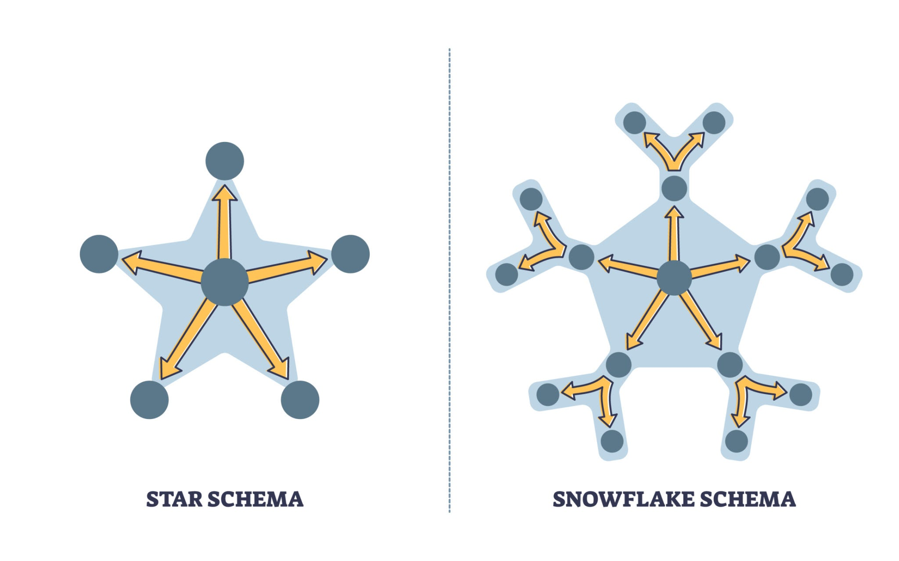
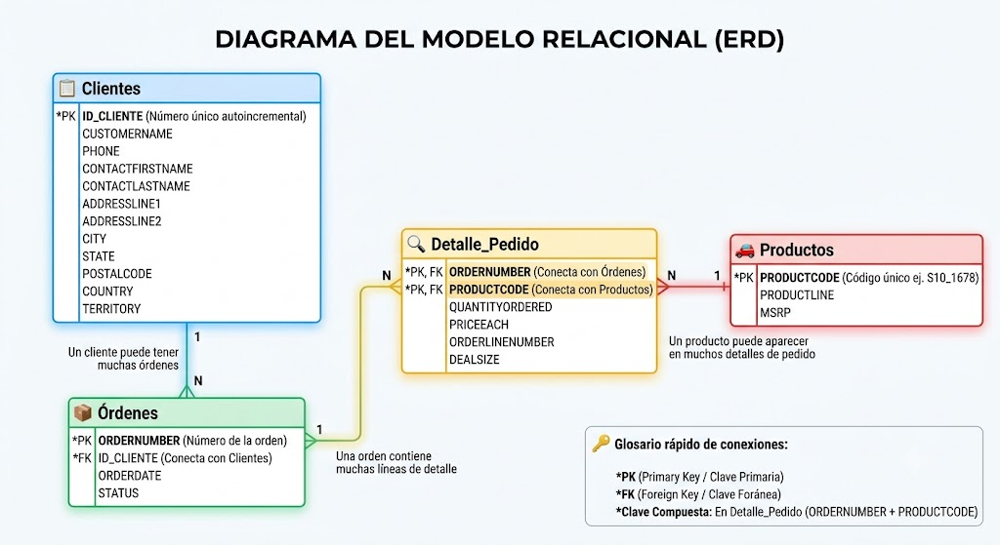

Modelado de datos
Partimos de una hoja de excel plana sales_data_sample.xls.
La tabla inicial es lo que en el mundo de los datos llamamos un Dataset Denormalizado o Tabla Plana. Es un registro histórico de ventas de una empresa (en este caso, de maquetas y juguetes de colección).
Contiene las siguientes columnas:
Datos del Pedido (La Transacción)
ORDERNUMBER: El número de factura o ticket. Se repite si el cliente compró varios productos a la vez.ORDERDATE: La fecha y hora en que se realizó la compra.STATUS: El estado del pedido (Shipped/Enviado, Resolved/Resuelto, Cancelled/Cancelado, etc.).QTR_ID,MONTH_ID,YEAR_ID: Campos redundantes que desglosan el trimestre, mes y año de la fecha.
Datos del Producto
PRODUCTCODE: El código de barras o identificador único del artículo (ej. S10_1678).PRODUCTLINE: La categoría del juguete (Motorcycles, Classic Cars, Trains, etc.).MSRP: El precio de venta recomendado por el fabricante.
Datos del “Renglón” de la Factura (El Detalle)
QUANTITYORDERED: Cuántas unidades de ese producto compró el cliente en esa orden.PRICEEACH: El precio real al que se le vendió cada unidad (el que venía con el error de formato que detectaste).ORDERLINENUMBER: El número de renglón dentro de la factura (Renglón 1, Renglón 2, etc.).SALES: El total de dinero de esa línea (QUANTITYORDERED\(\times\)PRICEEACH).DEALSIZE: Una clasificación del tamaño del negocio basado en el dinero (Small, Medium, Large).
Datos del Cliente (El Comprador)
CUSTOMERNAME: El nombre de la empresa que compra.CONTACTLASTNAME/CONTACTFIRSTNAME: El apellido y nombre de la persona de contacto en esa empresa.PHONE: Teléfono de la empresa.ADDRESSLINE1/ADDRESSLINE2: La dirección física de entrega.CITY/STATE/POSTALCODE: Ciudad, Estado/Provincia y Código Postal.COUNTRY/TERRITORY: País y región geográfica (ej. EMEA, NA, APAC).
1 El Diagnóstico Inicial: ¿Por qué no dejamos todo en una sola tabla?
Cuando recibes un archivo como sales_data_sample, se le llama Tabla Plana. Para analizarla en Excel rápido está bien, pero para un sistema de verdad es un peligro por tres razones:
Redundancia masiva: Si el cliente “Land of Toys Inc.” hace 50 pedidos, vas a repetir su teléfono, su dirección y el nombre del contacto 50 veces. El archivo pesa más de lo debido.
Riesgo de inconsistencia: Si ese cliente cambia de teléfono, tendrías que buscar las 50 filas y cambiarlo en todas. Si te olvidas de una, tus datos pierden coherencia.
Anomalías de borrado: Si borras el único pedido que te hizo un cliente, ¡borras también la existencia del cliente y su teléfono de tu historial!
Para solucionar esto, aplicamos la Normalización: separar los datos por “entidades” (conceptos lógicos del mundo real).
2 Pasos lógicos para saber cómo dividir tablas planas
2.1 PASO 1: El truco de los “Sustantivos” (Identificar Tablas)
Para saber en qué tablas dividir una hoja de Excel gigante, mira los encabezados de las columnas y busca“Sustantivos” principales (personas, cosas, lugares, eventos).
Frente a cualquier tabla plana, agrupa las columnas respondiendo a estas preguntas:
¿Hay datos que describen a una persona/empresa? (Nombre, teléfono, dirección) \(\rightarrow\) ¡Eso es una tabla! (Clientes).
¿Hay datos que describen un objeto/servicio a la venta? (Código, categoría, precio de lista) \(\rightarrow\) ¡Eso es otra tabla! (Productos).
¿Hay datos que describen un evento en el tiempo? (Fecha de factura, número de ticket, estado de envío) \(\rightarrow\) ¡Eso es otra tabla! (Órdenes).
2.2 PASO 2: La prueba del “Eco” (Detectar Redundancia)
Para entender por qué se divide, haz este ejercicio mental con la tabla plana:
La Regla del Cambio Único: > “Si un cliente cambia su número de teléfono, ¿en cuántas filas de este Excel tengo que modificarlo?”
Si la respuesta es: “En todas las filas donde ese cliente haya comprado algo (pueden ser 10, 50 o 100 veces)”, entonces está mal diseñado.
La conclusión lógica: Cada dato del mundo real debe existir en un solo lugar de la base de datos. Si el teléfono se repite, es una señal irrefutable de que toda la información del cliente debe ser arrancada de ahí y mudarse a su propia tabla independiente.
2.3 PASO 3: El dilema de la Clave Foránea (¿Dónde pongo el puente?)
Este es el talón de Aquiles de los principiantes: Saben que tienen que conectar la tabla A con la tabla B, pero no saben cuál de las dos debe llevarse la clave del otro.
2.3.1 La Analogía del Bolsillo (Relación 1 a Muchos)
Imagina que tenemos dos entidades: Madre y Hijo. Una madre puede tener muchos hijos, pero un hijo tiene una sola madre. Queremos conectarlos usando sus IDs. ¿Dónde ponemos el ID del otro?
Opción A (Incorrecta): Ponemos el ID de los hijos en la tarjeta de la Madre.
El problema: Si una madre tiene 1 hijo, anotas un número. Si tiene 5, tienes que empezar a crear columnas nuevas en su tarjeta (
Hijo_1,Hijo_2,Hijo_3…). Rompes la tabla porque madre solo hay una, y tú la estás duplicando.
Nombre del Hijo Edad Nombre de la Madre Teléfono de la Madre Juan 8 María 555-1234 Sofía 5 🔴 María (Duplicado) 🔴 555-1234 (Duplicado) Lucas 3 🔴 María (Duplicado) 🔴 555-1234 (Duplicado) ⚠️ El peligro real: Si María cambia de teléfono, tus compañeros tendrían que modificar tres celdas separadas. Si se olvidan de la fila de Lucas, los datos quedan corruptos.
Opción B (Correcta): Ponemos el ID de la Madre en el bolsillo de cada Hijo.
La ventaja: Cada hijo es una fila independiente. No importa si la madre tiene 1 o 20 hijos; cada hijo solo necesita guardar un único número en su bolsillo: el ID de su madre.
ID_Madre (PK) Nombre Teléfono 1 María 555-1234 ID_Hijo (PK) Nombre del Hijo Edad ID_Madre (FK) 101 Juan 8 1 102 Sofía 5 1 103 Lucas 3 1
👑 La Regla de Oro Definitiva:
La Clave Foránea (FK) SIEMPRE viaja a la tabla del “Muchos” (el Hijo). Nunca al revés.
2.4 (Cheat Sheet)
| Paso | ¿Qué hay que hacer? | ¿Cómo se lo explico a mi cerebro? |
| 1. Separar | Agrupar columnas por concepto. | “Esto habla del auto, esto habla del mecánico, esto habla del turno”. |
| 2. Crear PK | Darle un número de identidad a cada cosa. | “Cada cliente/producto necesita un DNI único que nunca cambie”. |
| 3. Conectar (FK) | Poner el ID del “padre” en la tabla del “hijo”. | “El elemento que se puede repetir muchas veces (el pedido) guarda en su bolsillo el ID del dueño (el cliente)”. |
3 Llevado a nuestro ejercicio práctico:
3.1 ¿Cuántas tablas debo crear?
En el diseño de bases de datos no existe una única respuesta correcta. El proceso de normalización es como ordenar un armario: puedes clasificar la ropa en tres grandes cajas o puedes usar veinte cajones diminutos para separar los calcetines por colores y texturas.
Para este proyecto, tras analizar el archivo plano original, decidimos dividir la información en cuatro tablas principales: Clientes, Productos, Órdenes y Detalle de Pedido. Sin embargo, es importante entender que esta no era la única opción disponible y que toda decisión de diseño implica un equilibrio entre la teoría matemática y la realidad práctica.
3.1.1 Las Alternativas: ¿Cómo se podría haber dividido?
Si le hubiéramos entregado este archivo a diferentes ingenieros de datos, habríamos obtenido soluciones muy distintas según su enfoque:
El enfoque minimalista (3 tablas): Algunos podrían haber intentado fusionar
ÓrdenesyDetalle_Pedido. El problema es que se rompería la lógica relacional, obligándonos a repetir la fecha y el estado del pedido por cada producto diferente que viniera dentro de la misma caja.El enfoque ultra-teórico (6 o más tablas): Un purista de las bases de datos habría llevado la normalización al extremo (lo que se conoce como Modelo Copo de Nieve). Habría arrancado los campos de contacto de la tabla de clientes para crear una tabla de
Contactos, y habría separado las ciudades, estados y países en tablas independientes (Paises,Estados,Ciudades) para evitar cualquier tipo de repetición de texto.
3.1.2 ¿Por qué 4 tablas es el “Punto Dulce” para este caso?
Hemos elegido el modelo de 4 tablas porque representa el equilibrio perfecto entre limpieza de datos, rendimiento del sistema y simplicidad de aprendizaje para el equipo, basándonos en los siguientes criterios:
3.1.2.1 Respeta el flujo del negocio
El modelo refleja exactamente cómo funciona el mundo real: un Cliente genera una Orden, esa orden se desglosa en un Detalle específico, y ese detalle consume artículos de un catálogo de Productos. Es una estructura intuitiva y fácil de consultar mediante código SQL o herramientas de análisis.
3.1.2.2 Tolerancia aceptable a la redundancia (Países y Territorios)
Es verdad que en nuestra tabla de Clientes el texto “USA” o “France” se va a repetir si tenemos varios clientes del mismo país. Teóricamente, esto es una redundancia. Sin embargo, decidimos dejar esos campos allí por pura pragmaticidad:
Poco beneficio de espacio: Una lista de países o ciudades es información muy estática que ocupa poquísimo espacio en texto. Crear tres tablas nuevas con sus respectivas claves primarias y foráneas solo para no repetir la palabra “USA” habría sobrecargado el sistema de forma innecesaria.
Complejidad en las consultas: Si separáramos los países, cada vez que quisiéramos hacer un reporte simple de “Ventas por País” tendríamos que unir (JOIN) cinco tablas en lugar de conectar directamente las que ya tenemos.
💡 Conclusión para el equipo: > Normalizar no significa destruir la redundancia a cualquier precio; significa eliminar la redundancia peligrosa (como los datos de facturación o los precios modificables) y mantener el diseño lo más simple y eficiente posible para quienes van a trabajar con él en el día a día.
3.2 ¿Qué tablas debo crear?
Para saber qué tablas crear, hazte estas preguntas frente al dataset:
¿Quién compra? \(\rightarrow\) El Cliente.
¿Qué compra? \(\rightarrow\) El Producto.
¿Cuándo y cómo se hace la transacción? \(\rightarrow\) La Orden (o Pedido).
¿Qué productos específicos van dentro de esa orden y en qué cantidad? \(\rightarrow\) El Detalle del Pedido.
3.3 Nuevo Modelo Relacional
A continuación, vemos cómo se distribuyen los campos originales, cuáles serán sus Claves Principales (Primary Key - PK) (el identificador único de cada fila) y sus Claves Foráneas (Foreign Key - FK) (el puente para conectar una tabla con otra).
Un Cliente puede tener Muchas Órdenes.
¿Quién es el hijo/el “Muchos”? La Orden.
¿Dónde va la FK? El
ID_CLIENTEse mete en el bolsillo de la tabla Órdenes.
Una Orden puede tener Muchos Detalles de Producto.
¿Quién es el hijo/el “Muchos”? El Detalle.
¿Dónde va la FK? El
ORDERNUMBERse mete en el bolsillo de Detalle_Pedido.
3.3.1 Tabla 1: Clientes (Clientes)
Guarda la información única de las empresas que nos compran. Solo hay un registro por cliente.
Clave Principal (PK):
ID_CLIENTE, un nuevo campo que seCampos incluidos:
PHONE,CONTACTFIRSTNAME,CONTACTLASTNAME,ADDRESSLINE1,ADDRESSLINE2,CITY,STATE,POSTALCODE,COUNTRY,TERRITORY.
3.3.2 Tabla 2: Productos (Productos)
Guarda el catálogo de lo que vendemos. Un registro por cada artículo diferente.
Clave Principal (PK):
PRODUCTCODE(El código único del producto, ej: S10_1678).Campos incluidos:
PRODUCTLINE(Gama o línea de producto),MSRP(Precio sugerido).
3.3.3 Tabla 3: Órdenes / Pedidos (Ordenes)
Guarda la cabecera del pedido. Es decir, los datos generales de la compra, sin importar si compraron 1 o 20 productos distintos en ella.
Clave Principal (PK):
ORDERNUMBER(Número de factura/pedido único).Clave Foránea (FK):
ID_CLIENTE(Nos dice quién hizo este pedido. Conecta con la tabla Clientes).Campos incluidos:
ORDERDATE(Fecha),STATUS(Estado del envío).
3.3.4 Tabla 4: Detalle de Pedido (Detalle_Pedido)
Esta es la tabla intermedia. Una orden puede tener muchos productos, y un producto puede estar en muchas órdenes. Esta tabla registra el “puzle” de qué cosas van dentro de cada caja.
Clave Principal (PK): Aquí podemos usar Clave Compuesta formada por la combinación de
ORDERNUMBER+PRODUCTCODE. No puede haber una fila idéntica con el mismo pedido y el mismo producto o dejar la tabla sin clave principal, ya que esta tabla no va a ser referenciada por otras, no hay necesidad de incluir una.Claves Foráneas (FK):
ORDERNUMBER(Conecta con la tabla Órdenes).PRODUCTCODE(Conecta con la tabla Productos).
Campos incluidos:
QUANTITYORDERED(Cantidad),PRICEEACH(Precio cobrado),SALES(Total de la línea),ORDERLINENUMBER(Número de renglón en la factura),DEALSIZE(Tamaño del trato).
3.4 Campos Redundantes y Eliminables
Un buen analista le demuestra al profesor que sabe optimizar espacio. En el dataset original hay campos que no deberías guardar en tu base de datos relacional porque se pueden calcular automáticamente:
| Campo original | ¿Por qué es redundante? | ¿Qué hacemos con él? |
QTR_ID, MONTH_ID, YEAR_ID |
Ya tienes la fecha completa en ORDERDATE. Guardar el año, mes y trimestre por separado es repetir datos que cualquier software puede extraer de la fecha. |
Eliminar. Se calculan mediante consultas de SQL o código cuando se necesiten. |
SALES |
Es el resultado matemático de multiplicar QUANTITYORDERED * PRICEEACH. |
Eliminar (o tratar como campo calculado). En bases de datos puras no se guardan multiplicaciones para evitar que, si cambia el precio, el total quede desactualizado. |
3.5 El Mapa de Relaciones (Modelo Entidad-Relación)
Para que las tablas “hablen” entre sí, establecemos conexiones lógicas.
Clientes \(\rightarrow\) Órdenes (Relación 1 a Muchos / \(1:N\)):
Lógica: Un cliente puede hacer muchas órdenes a lo largo del tiempo, pero una orden en específico pertenece a un solo cliente.
Conexión: El campo
ID_CLIENTEviaja de la tabla Clientes a la tabla Órdenes.
Órdenes \(\rightarrow\) Detalle de Pedido (Relación 1 a Muchos / \(1:N\)):
Lógica: Una orden puede tener muchos productos detallados en sus renglones, pero ese renglón de detalle pertenece exclusivamente a esa orden.
Conexión: El campo
ORDERNUMBERconecta ambas tablas.
Productos \(\rightarrow\) Detalle de Pedido (Relación 1 a Muchos / \(1:N\)):
Lógica: Un producto puede aparecer en muchos detalles de pedidos diferentes, pero cada renglón de detalle especifica un único producto.
Conexión: El campo
PRODUCTCODEconecta ambas tablas.
💡 Nota conceptual: Al unir Órdenes y Productos a través de Detalle de Pedido, hemos resuelto una relación de Muchos a Muchos (\(N:M\)) (Muchas órdenes tienen muchos productos). Las bases de datos no toleran las relaciones de Muchos a Muchos directamente, por eso la tabla
Detalle_Pedidoactúa como el puente perfecto.
